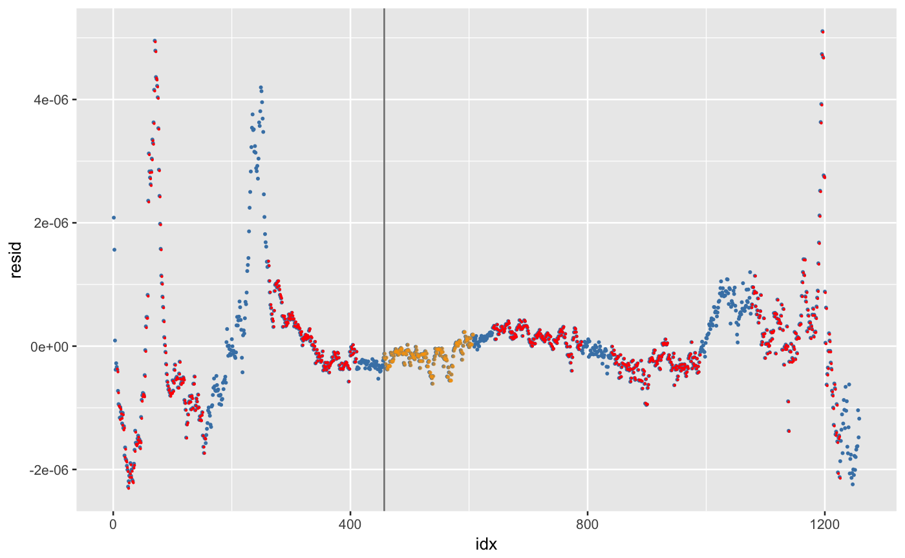
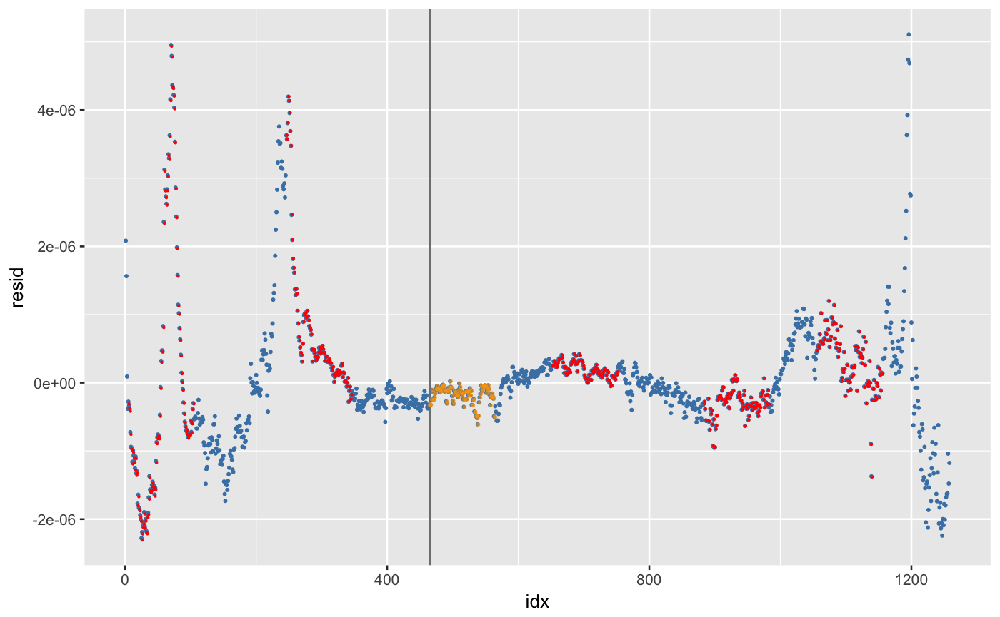

Chumbley test score
chumbley(b1, b2, window, reps = 3)
| b1 | dataframe |
|---|---|
| b2 | dataframe |
| window | width of the window (in indices) to consider for matching |
| reps | number of replicates to use in the evaluation |
library(dplyr) data(br411) b1 <- get_crosscut(x = 250, bullet=br411) b2 <- get_crosscut(x = 150, bullet = br411) b3 <- get_crosscut(x = 10, bullet=br411) b1.gr <- b1 %>% get_grooves(smoothfactor=30) b2.gr <- b2 %>% get_grooves() b3.gr <- b3 %>% get_grooves() # get signatures b1 <- fit_loess(b1, b1.gr)$data b2 <- fit_loess(b2, b2.gr)$data b3 <- fit_loess(b3, b3.gr)$data match12 <- get_lag_max_R(b1, b2, window = 100, b1.left = 450) # matched correlations get_cor(b1, b2, window = 100, b1.left = 800, lag = match12$lag)#> [1] 0.7557572#> [1] 0.7263523#> [1] 0.8210761#> [1] -0.2344068#> [1] 0.004281734#> [1] -0.007236934chumbley(b1, b2, window=150, reps=5)#> Warning: 'chumbley' is deprecated. #> Use 'get_chumbley' instead. #> See help("Deprecated")#> $alignment #> $alignment$window #> [1] 457 607 #> #> $alignment$lag #> [1] 0 #> #> $alignment$cor #> [1] 0.9999797 #> #> $alignment$plot#> #> #> $test #> #> Wilcoxon rank sum test #> #> data: cor_matched and cor_random #> W = 25, p-value = 0.003968 #> alternative hypothesis: true location shift is greater than 0 #> #> #> [[3]] #> [1] 0.9879362 0.9725222 0.8508933 0.6874066 0.9234738 #> #> [[4]] #> [1] -0.17543145 0.01661944 0.14323364 -0.29023925 -0.08977545 #>match13 <- get_lag_max_R(b1, b3, window = 100, b1.left = 450) # matched correlations get_cor(b1, b3, window = 100, b1.left = 800, lag = match13$lag)#> [1] 0.7557572#> [1] 0.7263523#> [1] 0.8210761#> [1] -0.2344068#> [1] NA#> [1] NAchumbley(b1, b3, window=100, reps=5)#> Warning: 'chumbley' is deprecated. #> Use 'get_chumbley' instead. #> See help("Deprecated")#> $alignment #> $alignment$window #> [1] 465 565 #> #> $alignment$lag #> [1] 0 #> #> $alignment$cor #> [1] 0.9999605 #> #> $alignment$plot#> #> #> $test #> #> Wilcoxon rank sum test #> #> data: cor_matched and cor_random #> W = 25, p-value = 0.003968 #> alternative hypothesis: true location shift is greater than 0 #> #> #> [[3]] #> [1] 0.9890167 0.9870028 0.8642092 0.7263527 0.7162785 #> #> [[4]] #> [1] -0.22434488 -0.22396402 0.25602491 0.05800545 0.27775455 #>